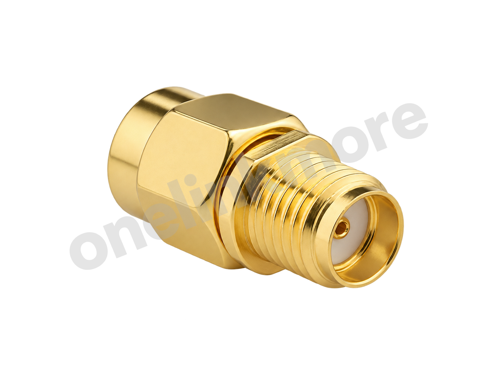
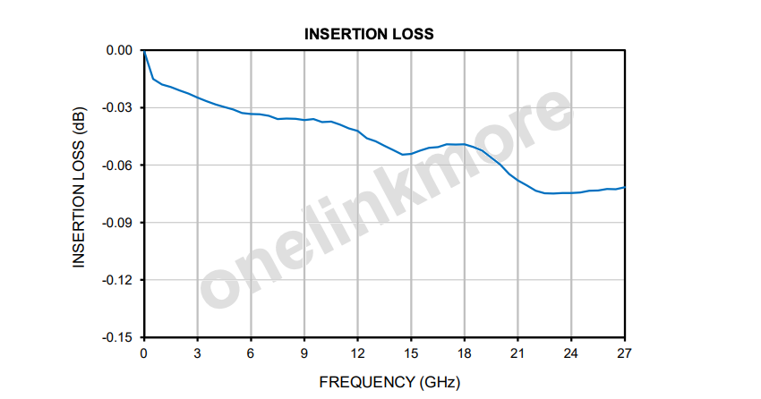
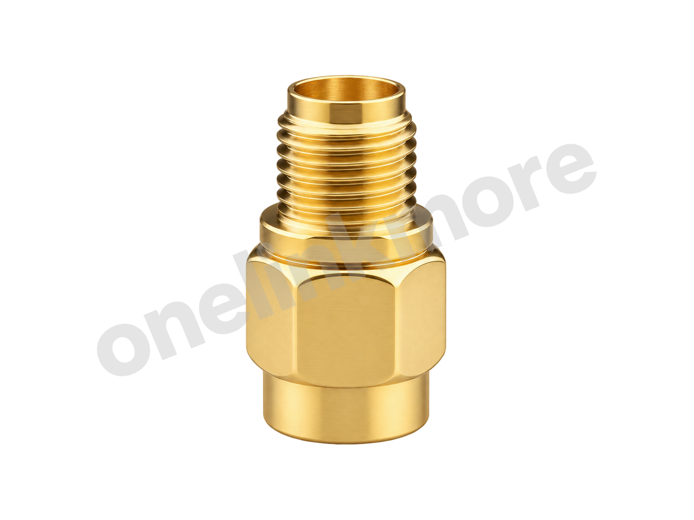
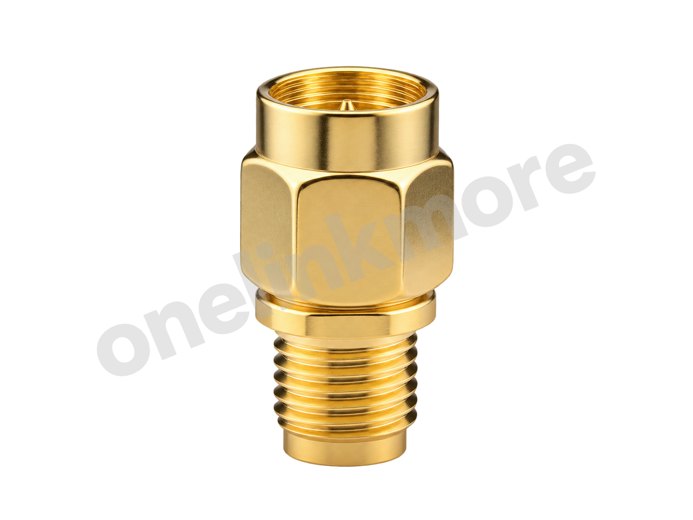
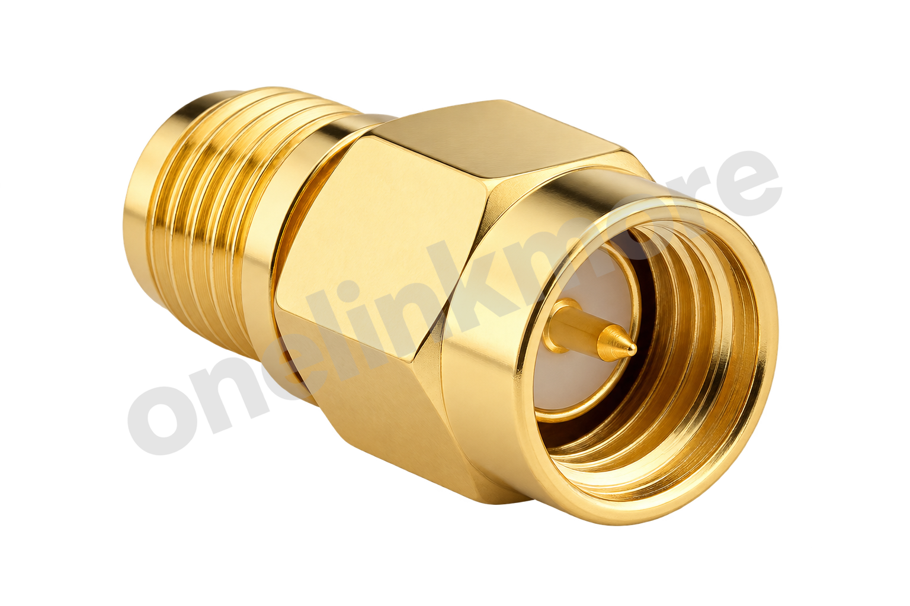

行业典型特性阻抗
50 Ω
RF CONNECTOR / PRODUCT SPECIFICATION
SMA 公头转 SMA 母头射频转接器
OL1271 是 SMA 公头转 SMA 母头射频转接器。下列参数是普通 SMA 接头的行业典型参考，并非 OL1271 的保证规格；实际指标应以该型号专用规格书或实测结果为准。展示的插入损耗图原图未给出测试条件，不能据此宣称 27 GHz 额定工作能力。

CORE SPECIFICATIONS
行业典型特性阻抗
50 Ω
行业典型工作频率
DC-6 GHz
行业典型驻波比
约 1.20:1
行业典型回波损耗
约 20.8 dB
行业典型插入损耗
约 0.10 dB @ 6 GHz
行业典型工作温度
-55 °C 至 +125 °C
TECHNICAL SPECIFICATIONS
| 参数 Parameter | 规格 Specification |
|---|---|
| 6 GHz SMA 行业典型参考（非型号保证值） | |
| 行业典型特性阻抗 | 50 Ω |
| 行业典型工作频率 | DC-6 GHz |
| 行业典型驻波比 | 约 1.20:1 |
| 行业典型回波损耗 | 约 20.8 dB |
| 行业典型插入损耗 | 约 0.10 dB @ 6 GHz |
| 行业典型中心接触电阻 | 约 3 mΩ |
| 行业典型外导体接触电阻 | 约 2 mΩ |
| 行业典型绝缘电阻 | ≥ 5000 MΩ |
| 行业典型耐压 | 约 500 Vrms |
| 行业典型工作温度 | -55 °C 至 +125 °C |
| 行业典型绝缘材料 | PTFE（聚四氟乙烯） |
| 行业典型接口阻抗 | 50 Ω nominal |
TEST CURVES

PRODUCT IMAGES



CONTACT
电话： 13352990798
微信： YILIANDUO-RF